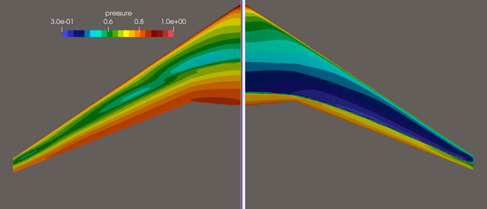
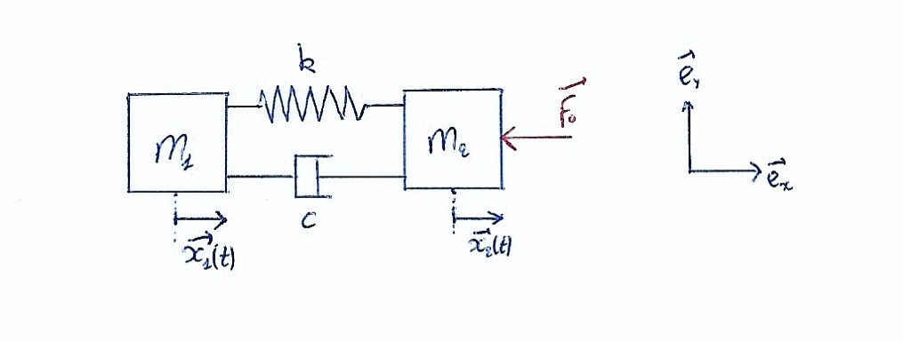
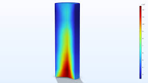
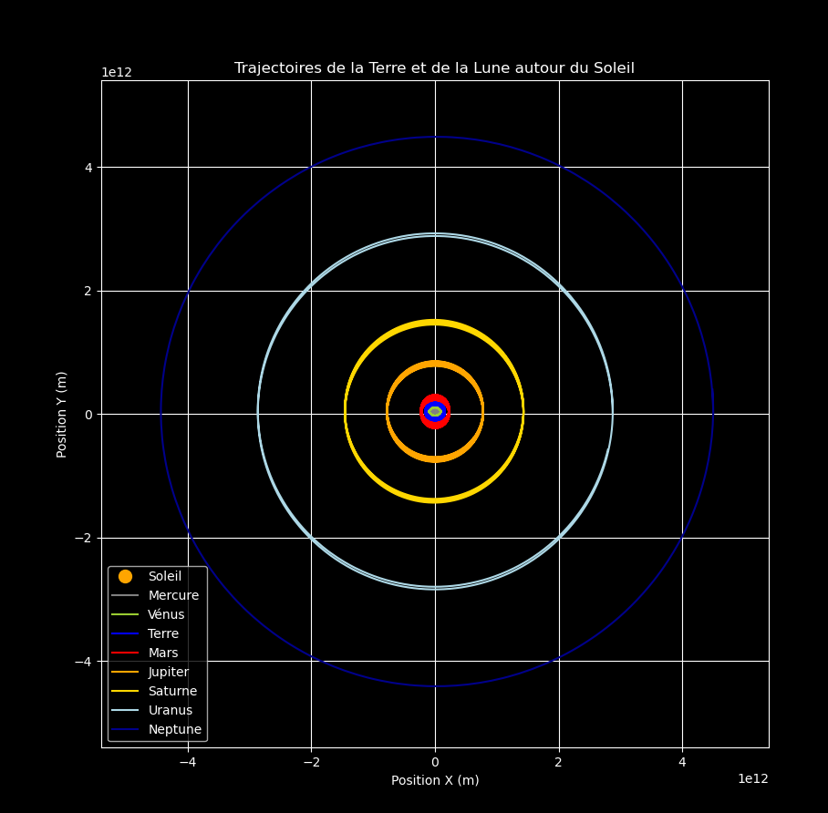

École Polytechnique Universitaire de Lyon – Spécialité en Génie Mécanique
École Polytechnique Universitaire de Lyon – Mechanical Engineering Student
Étudiant en ingénierie mécanique – Passionné par la mécanique des fluides et les défis techniques complexes.
Bienvenue sur mon portfolio ! Vous y découvrirez quelques un de mes projets, mes compétences et mon parcours académique.
Actuellement étudiant à l'École Polytechnique Universitaire de Lyon, je me spécialise dans le domaine du génie mécanique, où je me concentre sur l'optimisation de géométries, l'analyse vibratoire et la simulation numérique.
Ce portfolio est le reflet de ma passion pour l'ingénierie et de mes projets réalisés dans divers environnements académiques et professionnels.
Si vous avez des questions ou si vous souhaitez discuter d'une collaboration, n'hésitez pas à me contacter via la section Contact.
Merci de votre visite et à bientôt !
Mechanical Engineering Student – Passionate about fluid mechanics and tackling complex technical challenges.
Welcome to my portfolio! Here, you will find some of my projects, skills, and academic background.
Currently studying at the École Polytechnique Universitaire de Lyon, I specialize in mechanical engineering, focusing on geometry optimization, vibrational analysis, and numerical simulation.
This portfolio reflects my passion for engineering and the projects I have completed in various academic and professional settings.
If you have any questions or would like to discuss potential collaboration, feel free to contact me through the Contact section.
Thank you for visiting, and I look forward to hearing from you!
Modèle réduit par POD et SOM sur géométries composites — Python / CFD / CSM
Détails
Modèle réduit / Rayleigh / Traction-Compression / Défaut de masse
Détails


École Polytechnique Universitaire de Lyon – Génie Mécanique (2023–2026)
CPGE St Joseph Pierre Rouge – PSI (2020–2023)
Bac Scientifique mention bien euro anglais – Lycée Théodore Aubanel (2019)
École Polytechnique Universitaire de Lyon – Mechanical Engineering (2023–2026)
Preparatory Class PSI – St Joseph Pierre Rouge (2020–2023)
Scientific Baccalaureate, honors, Euro English section – Aubanel High School (2019)
Tu peux télécharger mon CV ici :
You can download my resume here:
Email : romain.urbaniak@etu.univ-lyon1.fr
LinkedIn : linkedin.com/in/romain-urbaniak-001b1a2a1
GitHub : github.com/romainurb-fr
Email: romain.urbaniak@etu.univ-lyon1.fr
LinkedIn: linkedin.com/in/romain-urbaniak-001b1a2a1
GitHub: github.com/romainurb-fr